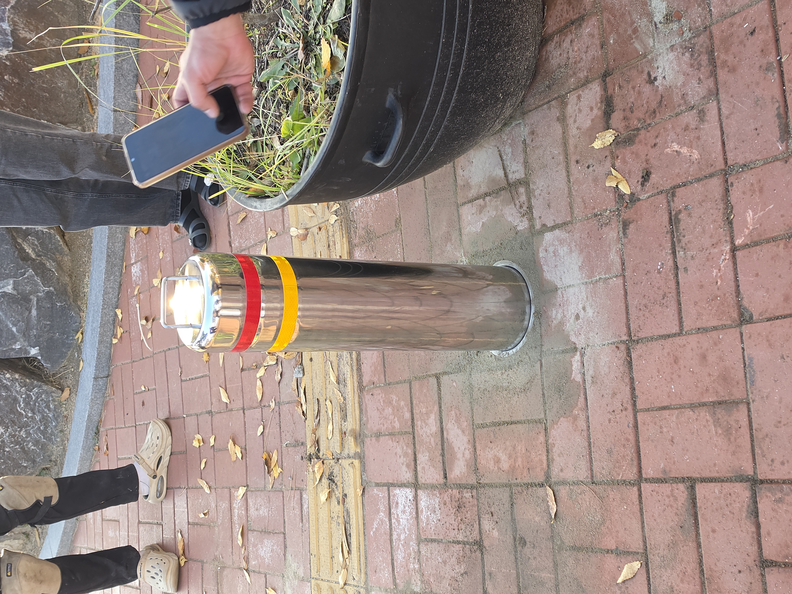
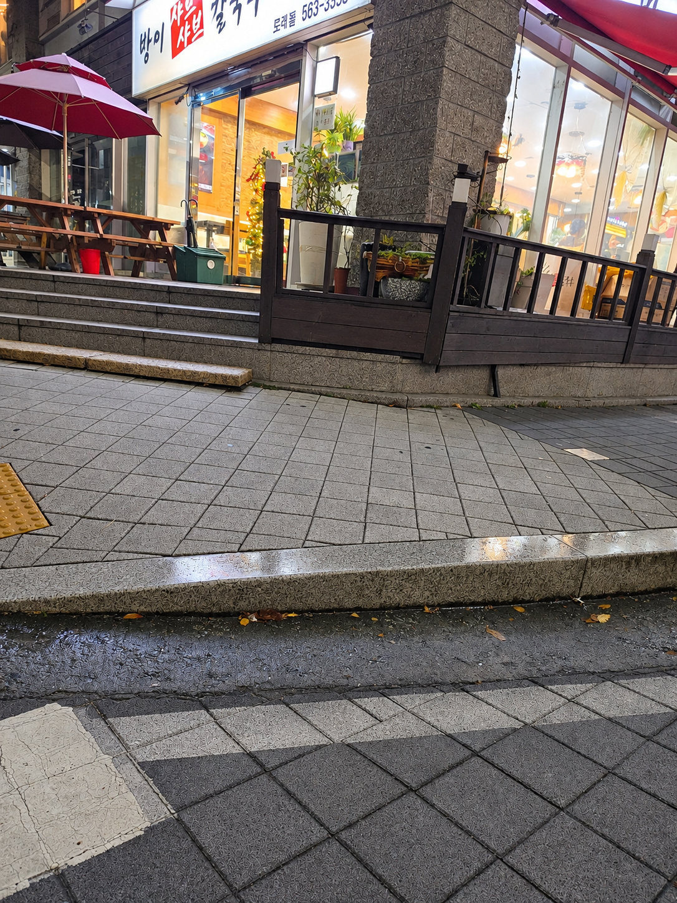
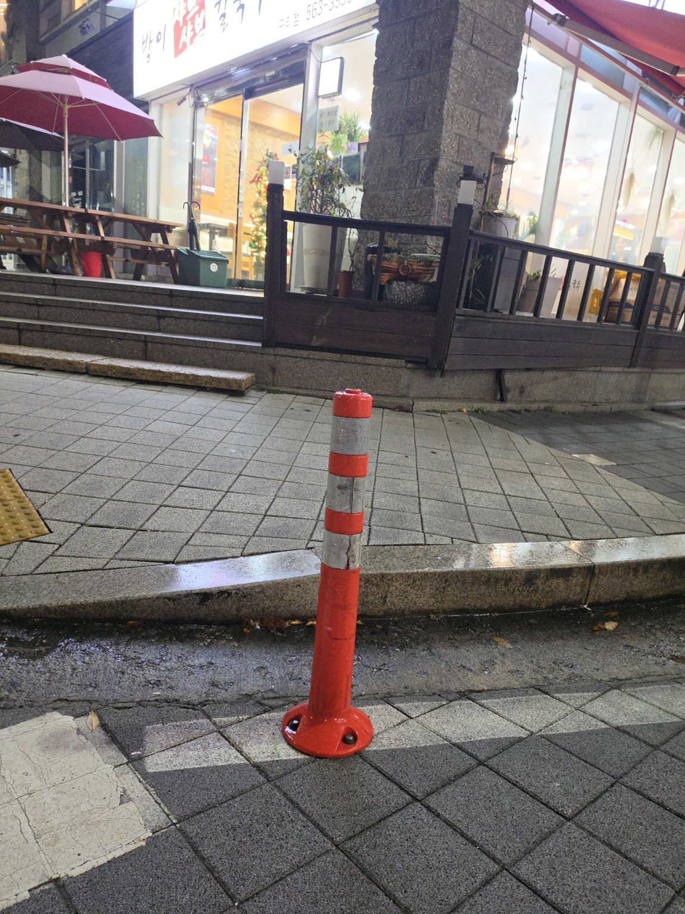
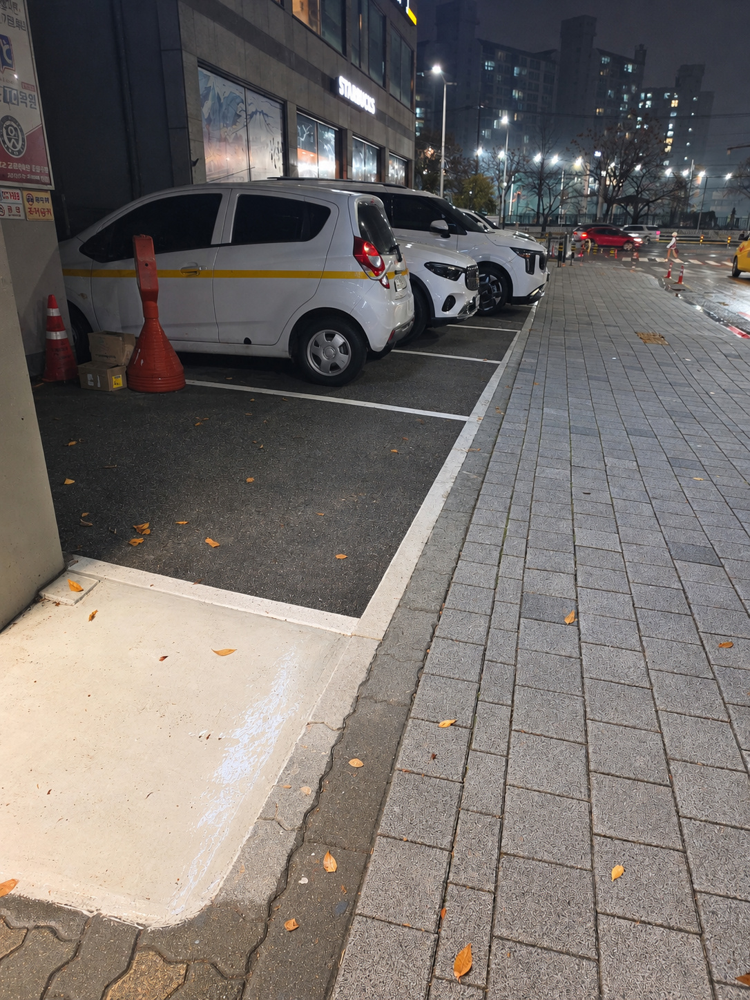
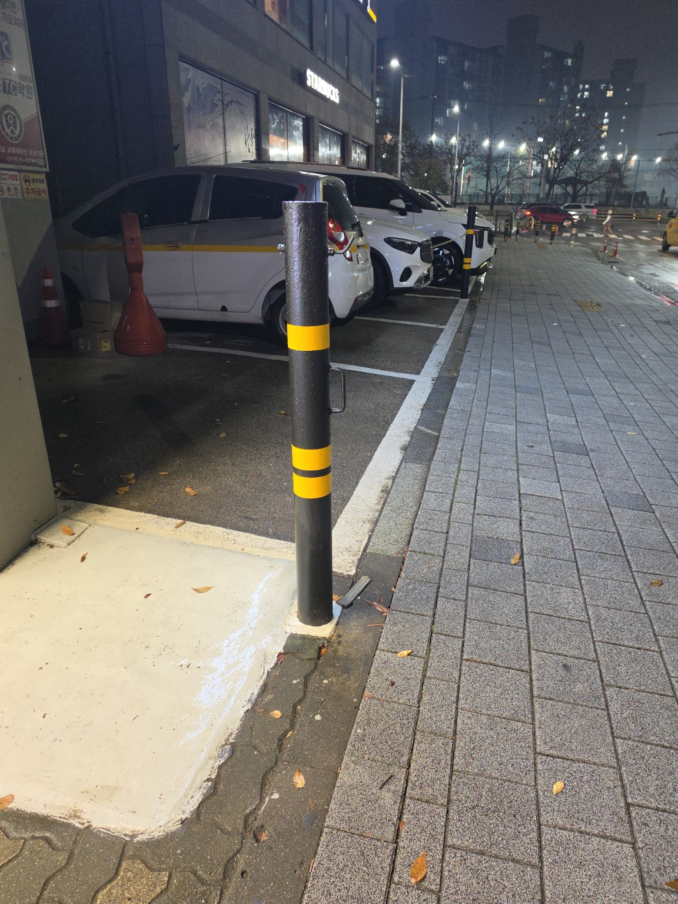
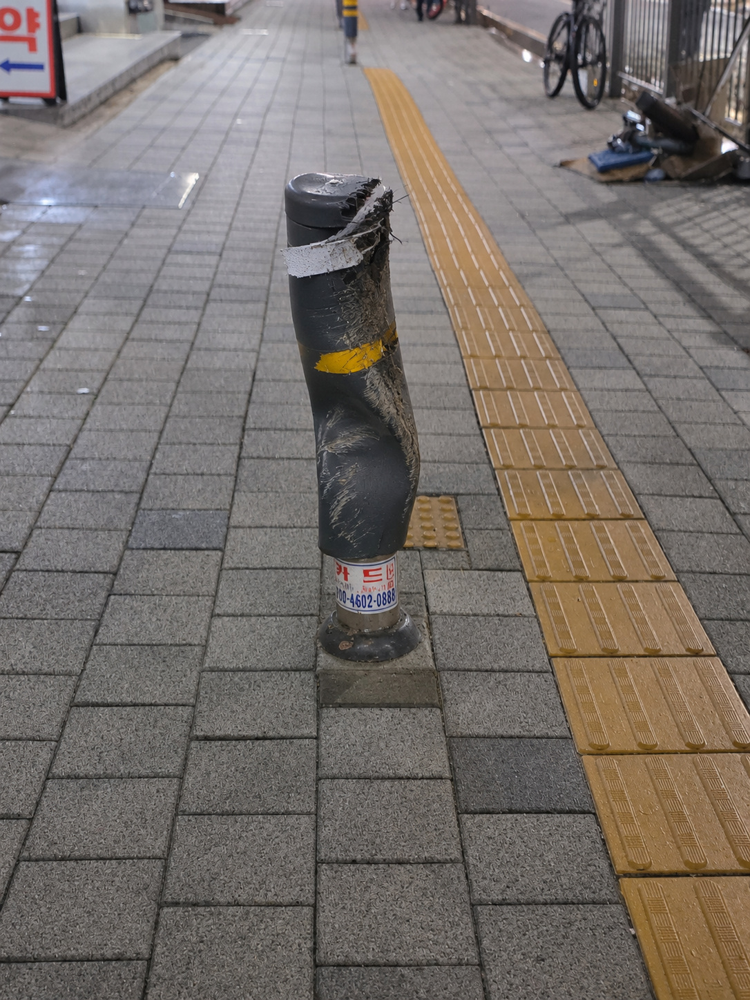
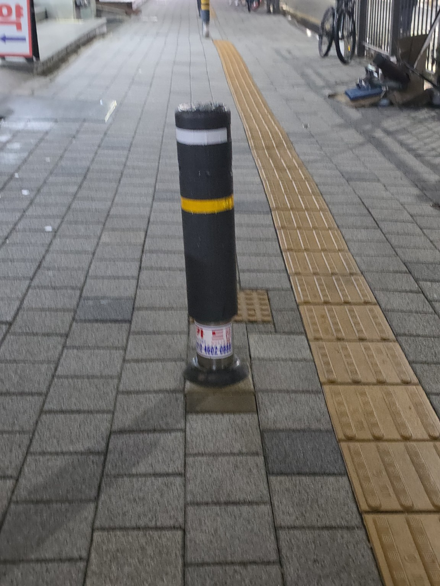
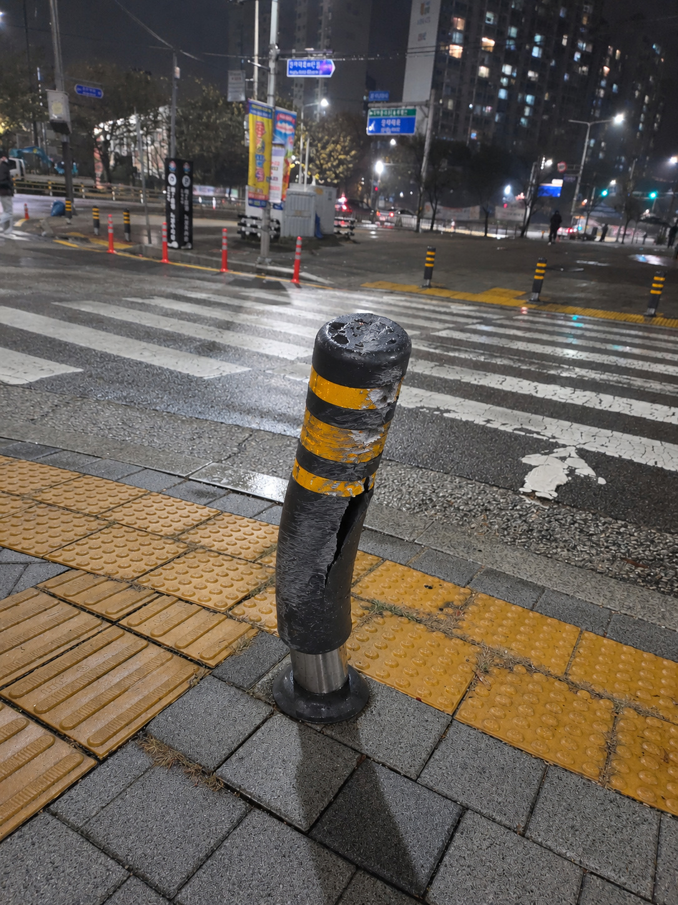
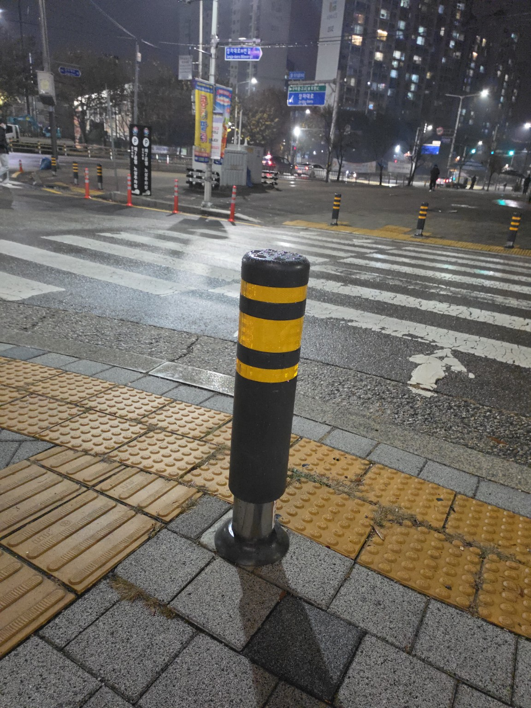

동·시 볼라드 교체·수리 · 주차 안전바 1개 부분보수 전문
부러지고 흔들리는 볼라드·주차 안전바,
1개만 교체·수리해도 새것처럼 튼튼해집니다.
멀쩡한 시설물까지 통째로 갈아엎지 않습니다. 파손된 자리만 정밀 철거 후 바닥 재질에 맞춰 단단하게 교체·수리합니다.
 시공 전 · 파손/이탈
시공 전 · 파손/이탈

시공 후 · 교체/수리 완료차량 접촉으로 휘어진 볼라드·주차 안전바 1개 부분 교체·수리부터 풀린 앙카 보강, 위치·간격 수정, 셀프 시공 실패 복구까지 현장 맞춤으로 해결합니다. 스텐(U자형·일자형)·우레탄·매립이동식·앙카이동식(자물쇠·체인 옵션) 모두 보유·시공하며, 서울·경기(구리·남양주·양주·광명·송파 등)·인천·충주 주말·야간 출장을 지원합니다.
종류별·지역별 볼라드 & 주차 안전바 교체·수리 사례
구리·남양주·양주·송파·광명·인천·충주 등 현장에 맞는 볼라드 종류와 공법으로 파손 부위만 정밀 교체·수리합니다. 카드를 누르면 아카이브로 이동합니다.
전
구리시 수택동 볼라드 교체·수리
차량 충격 이탈 기둥 철거 후 앙카 재고정
아카이브 보기 → 전
전
 후
후
송파구 볼라드 교체·수리
파손 볼라드 1개 정밀 철거 후 앙카 재고정·부분교체
아카이브 상세 보기 →
전
후중랑구 볼라드 교체·설치
이탈 주차금지봉·볼라드 바닥 보강 및 수평 재시공
아카이브 상세 보기 →
전
후성북구 볼라드 교체·수리
차량 접촉 파손 기둥 1개 부분보수 및 앙카 고정
아카이브 상세 보기 → 전
전
 후
후
다산 주차 스토퍼·카스토퍼 교체
파손 주차 블럭·차량 방지턱 앙카 보강 및 부분 교체
아카이브 상세 보기 →
전
후암사동 볼라드 교체 설치 업체
파손 볼라드 1개 정밀 철거 후 앙카 재고정·부분교체
아카이브 상세 보기 →
전
후천호동 볼라드 교체 설치 업체
이탈 주차 안전바·볼라드 바닥 보강 및 재고정 설치
아카이브 상세 보기 →
전
인천 서구 청라동 볼라드 교체·수리
파손 볼라드 1개 정밀 철거 및 바닥 재고정
아카이브 보기 →
전
수원시 영통구 볼라드 교체·수리
보도블록 침하 부위 평탄화 후 1개 정밀 교체
아카이브 보기 →
전
충주시 연수동 볼라드 교체·수리
주말 예약 출장 · 헐거워진 앙카 보강 재시공
아카이브 보기 →내 현장은 어떤 상황인가요?
가장 많이 문의하시는 4가지 현장 고민
해당하는 상황을 눌러보시면 실제 현장에서 어떻게 해결했는지 바로 확인하실 수 있습니다.
"차가 들이받아 볼라드·안전바 1개만 부러졌어요"
기존 파손 기둥과 박혀있는 앙카 볼트를 깔끔히 제거한 뒤, 주변 간격과 높이를 맞춰 1개만 부분 교체합니다.
"기둥은 멀쩡한데 바닥에서 흔들리거나 위치를 옮기고 싶어요"
아스콘·보도블록 등 약한 바닥에 박혀 헐거워진 앙카를 보강 재고정하거나 차량 동선에 맞춰 설치 위치를 수정·수리합니다.
"평소엔 막아두고 필요할 때만 빼서 차를 대고 싶어요"
바닥 천공 후 매립관을 묻는 매립이동식 또는 자물쇠 잠금·체인 고리 용접 볼라드로 무단 주차를 완벽히 차단합니다.
"평일 낮엔 차가 계속 드나들어 작업할 시간이 없어요"
상가·빌라·물류센터 출입구 등 낮 시간 통제가 어려운 현장은 주말 및 야간 예약 출장으로 안전하게 시공합니다.
왜 마이홈리페어랩일까요?
일반 전체 교체 vs 마이홈리페어랩 정밀 부분 교체·수리
고객의 불필요한 지출을 줄이고, 한 번 시공할 때 다시 빠지지 않도록 제대로 고정합니다.
| 비교 항목 | 일반 업체 / 단순 셀프 설치 | 마이홈리페어랩 맞춤 시공 |
|---|---|---|
| 시공 범위 | 소량 작업 거절 또는 멀쩡한 구간까지 전체 교체 권유 | 파손된 볼라드·안전바 1개만 정밀 부분 교체 및 수리 |
| 바닥별 고정 공법 | 바닥 재질 구분 없이 기본 동봉 앙카만 체결 (쉽게 빠짐) | 아스콘·콘크리트·보도블록 강도에 맞춰 전용 앙카·케미컬·매립 시공 |
| 기존 파손물 처리 | 부러진 볼트 돌출 방치 또는 주변 바닥 깨짐 발생 | 잔여 앙카 그라인딩·매립 평탄화 후 깔끔하게 신품 안착 |
| 방문 일정 | 평일 주간만 가능해 주차장 통제·민원 발생 | 평일은 물론 주말·야간 예약 출장으로 영업 지장 최소화 |
견적 바로가기
볼라드 · 주차 안전바 견적 물어보기
아래 4가지를 적거나 선택하시면 오른쪽(모바일은 아래)에서 견적 내용을 바로 확인하고 복사·문자 발송하실 수 있습니다.
자주 묻는 질문 (Q&A)
볼라드 교체·수리 · 주차 안전바 시공 상담 Q&A
파손되거나 휘어진 볼라드·주차 안전바 1개만 부분 교체하거나 수리할 수 있나요?
네, 가능합니다. 멀쩡한 주변 시설물까지 전체 철거하지 않고 차량 충격으로 휘어지거나 이탈한 볼라드 및 주차 안전바 1개나 소량만 현장 바닥 재질에 맞춰 앙카식·매립식·이동식으로 깔끔하게 부분 교체 및 수리해 드립니다.
직접 설치하다 앙카가 헛돌거나 흔들리는데 재고정 수리도 되나요?
네, 아스콘이나 노후 콘크리트 바닥은 일반 앙카를 쓰면 쉽게 빠집니다. 기존 부실 앙카를 정리한 뒤 바닥 깊이와 강도에 맞는 전용 앙카·보강 공법으로 튼튼하게 재고정해 드립니다.
매립이동식과 앙카이동식 볼라드는 어떤 차이가 있나요?
매립이동식은 바닥을 코어 천공하여 매립관을 묻은 뒤 볼라드를 꽂아 고정하는 방식으로, 기둥을 뺐을 때 바닥 걸림턱이 없어 보행·차량 통행에 안전합니다. 앙카이동식은 바닥 위에 베이스 받침을 앙카로 고정한 뒤 기둥을 분리·결합하는 방식이며, 두 방식 모두 자물쇠 잠금 및 상단 체인 연결 옵션을 선택하실 수 있습니다.
평일 낮에는 차량 통행이 많아 작업이 어려운데 주말이나 야간도 가능한가요?
네, 상가 주차장, 물류센터, 아파트 출입구 등 평일 주간 통제가 어려운 현장을 위해 주말 및 야간 예약 출장 시공을 지원합니다.
출장 가능한 지역 범위는 어디까지인가요?
구리시·남양주시·양주시·광명시를 비롯한 경기도 31개 시·군 전지역과 서울특별시 전 구, 인천광역시 전지역, 그리고 충청북도 충주시 전지역까지 일정을 조율하여 직접 방문 시공합니다.
지역을 선택하시면 해당 지역 맞춤 견적 화면으로 바뀝니다.
구리시·남양주시·양주시·광명시를 비롯한 경기도 31개 시군 전체, 서울특별시, 인천광역시, 충주시 전 지역 동·읍·면 출장 상담이 가능합니다.
[경기도 전지역] 구리시·남양주시·양주시·광명시 및 경기도 31개 시·군 동·읍·면 출장 안내
· 구리시: 수택동 볼라드 교체·수리, 인창동 볼라드 교체·수리, 토평동 볼라드 교체·수리, 갈매동 볼라드 교체·수리, 교문동·동구동·아천동·사노동 전지역 출장
· 남양주시: 와부읍(덕소) 볼라드 교체·수리, 다산동 볼라드 교체·수리, 별내동·별내면 볼라드 교체·수리, 진접읍·오남읍·퇴계원읍·화도읍·평내동·호평동·금곡동·지금동·도농동 전지역 출장
· 양주시: 회천동 볼라드 교체·수리, 옥정동 볼라드 교체·수리, 고읍동 볼라드 교체·수리, 덕정동·백석읍·광적면·남면·은현면 전지역 출장
· 광명시: 하안동 볼라드 교체·수리, 철산동 볼라드 교체·수리, 소하동 볼라드 교체·수리, 일직동·광명동·옥길동·노온사동·가학동 전지역 출장
· 성남시·용인시·광주시·이천시·여주시: 분당구(정자동, 서현동, 수내동, 야탑동, 이매동, 판교동, 백현동, 운중동, 금곡동, 구미동), 수정구(위례동, 태평동, 신흥동, 수진동, 고등동), 중원구(성남동, 상대원동, 은행동, 금광동) / 용인시 수지구·기흥구·처인구 / 광주시 태전동·고산동·오포동·능평동·신현동 / 이천시·여주시 전지역 출장
· 수원시·화성시·오산시·평택시·안성시: 수원시 영통구·팔달구·권선구·장안구 / 화성시 동탄1신도시·동탄2신도시(반송동, 능동, 청계동, 오산동, 목동, 산척동, 송동, 영천동), 봉담읍·향남읍·병점동·진안동·새솔동·남양읍 / 오산시·평택시·안성시 전지역 출장
· 안양시·군포시·의왕시·과천시·안산시·시흥시·부천시·고양시·김포시·파주시·의정부시·동두천시·포천시·연천군: 경기도 전 시·군 동·읍·면 볼라드 및 주차 안전바 교체·수리 출장 시공
[서울특별시 전지역] 송파구 문정동 등 25개 자치구 주요 동별 출장 안내
· 동남권: 송파구(문정동 볼라드 교체·수리, 잠실동, 가락동, 거여동, 마천동, 방이동, 오금동, 송파동, 삼전동, 석촌동, 풍납동, 장지동), 강동구(천호동, 길동, 둔촌동, 명일동, 고덕동, 상일동, 암사동, 성내동, 강일동), 강남구(대치동, 도곡동, 개포동, 역삼동, 삼성동, 청담동, 압구정동, 논현동, 수서동, 일원동, 세곡동), 서초구(반포동, 잠원동, 서초동, 방배동, 양재동, 내곡동, 우면동)
· 동북권: 노원구(중계동, 상계동, 하계동, 공릉동, 월계동), 도봉구(창동, 쌍문동, 방학동, 도봉동), 강북구(미아동, 번동, 수유동, 우이동), 성북구(길음동, 돈암동, 정릉동, 장위동, 석관동, 보문동), 중랑구(면목동, 상봉동, 중화동, 묵동, 망우동, 신내동), 동대문구(장안동, 전농동, 답십리동, 이문동, 휘경동, 제기동, 용두동), 광진구(구의동, 자양동, 광장동, 화양동, 군자동, 중곡동), 성동구(왕십리동, 행당동, 금호동, 옥수동, 성수동, 응봉동)
· 서남권: 강서구(등촌동, 화곡동, 마곡동, 방화동, 공항동, 염창동, 가양동, 내발산동), 양천구(목동, 신정동, 신월동), 구로구(구로동, 신도림동, 개봉동, 고척동, 오류동, 궁동, 항동), 영등포구(여의도동, 당산동, 문래동, 영등포동, 신길동, 대림동, 양평동), 동작구(상도동, 흑석동, 노량진동, 사당동, 대방동, 신대방동), 관악구(봉천동, 신림동, 남현동), 금천구(가산동, 독산동, 시흥동)
· 서북·도심권: 마포구(염리동, 아현동, 공덕동, 대흥동, 도화동, 서교동, 합정동, 망원동, 성산동, 상암동), 서대문구(북아현동, 홍제동, 홍은동, 연희동, 남가좌동, 북가좌동), 은평구(진관동, 불광동, 갈현동, 대조동, 역촌동, 응암동, 녹번동, 수색동, 증산동), 용산구(이촌동, 한남동, 효창동, 문배동, 한강로동), 종로구·중구 전지역
[인천광역시 전지역] 서구·연수구·남동구·부평구·계양구·미추홀구·중구·동구 출장 안내
· 인천 전지역: 서구(청라동, 검암동, 경서동, 당하동, 원당동, 불로동, 마전동, 왕길동, 가정동, 신현동, 석남동, 가좌동), 연수구(송도동, 동춘동, 연수동, 옥련동, 선학동, 청학동), 남동구(구월동, 논현동, 만수동, 간석동, 서창동, 도림동), 부평구(삼산동, 부평동, 산곡동, 청천동, 부개동, 갈산동, 십정동), 계양구(계산동, 작전동, 효성동, 임학동, 귤현동, 동양동), 미추홀구(용현동, 학익동, 주안동, 도화동, 숭의동, 관교동), 중구(영종도 운서동, 중산동, 운남동, 신흥동), 동구 송림동·화수동 전지역
[충청북도 충주시 전지역] 충주시 동·읍·면 출장 안내
· 충주시 전지역: 충주시 연수동, 칠금동, 금릉동, 호암동, 직동, 문화동, 성서동, 용산동, 지현동, 봉방동, 교현동, 안림동, 목행동, 달천동, 대소원면(서충주신도시 첨단산업단지·기업도시), 주덕읍, 신니면, 노은면, 앙성면, 중앙탑면, 금가면, 동량면, 산척면, 엄정면, 소태면, 살미면, 수안보면 전지역 출장 시공